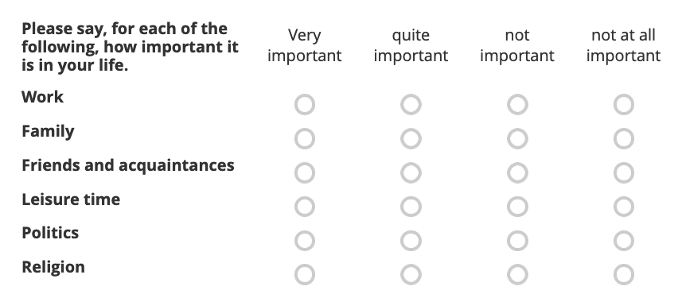

Data wrangling of responses
Source:vignettes/wrangling-survey-responses.Rmd
wrangling-survey-responses.RmdIntroduction
This article demonstrates some techniques for cleaning and wrangling data returned by the get_submissions method of the Kobo and Asset classes. The vignette is broken down by the different question types. In general, users should make heavy use of the question options to give custom column names and labels for answer options. This will result in better behaving column names and make data cleaning easier.
library(kbtbr)
library(tidyr)
library(stringr)
library(dplyr)
BASE_URL <- "https://kobo.correlaid.org"
kobo <-
Kobo$new(base_url_v2 = BASE_URL,
kobo_token = Sys.getenv("KBTBR_TOKEN"))
asset_id <- "aRo4wg5utWT7dwdnQQEAE7"
submissions_df <- kobo$get_submissions(asset_id)Let’s look at the column names:
colnames(submissions_df)
#> [1] "_id"
#> [2] "control_over_life"
#> [3] "Taking_all_things_to_ould_you_say_you_are"
#> [4] "voluntary_activity"
#> [5] "trust_in_groups/Your_family"
#> [6] "formhub/uuid"
#> [7] "_validation_status"
#> [8] "importance_in_life/Politics"
#> [9] "_uuid"
#> [10] "health_self_assessment"
#> [11] "importance_in_life/Friends_and_acquaintances"
#> [12] "_tags"
#> [13] "trust_in_groups/People_you_know_personally"
#> [14] "_submitted_by"
#> [15] "_xform_id_string"
#> [16] "importance_in_life/Family"
#> [17] "trust_in_groups/People_you_meet_for_the_first_time"
#> [18] "meta/instanceID"
#> [19] "trust_in_groups/People_of_another_nationality"
#> [20] "trust_in_groups/People_in_your_neighborhood"
#> [21] "importance_in_life/Religion"
#> [22] "end"
#> [23] "locate_hamburg"
#> [24] "_submission_time"
#> [25] "_notes"
#> [26] "_attachments"
#> [27] "importance_in_life/Leisure_time"
#> [28] "start"
#> [29] "trust_in_groups/People_of_another_religion"
#> [30] "_geolocation"
#> [31] "importance_in_life/Work"
#> [32] "_status"
#> [33] "__version__"
#> [34] "trust_in_others"
#> [35] "file_upload"The form contains questions of several of the available types in KoBoToolbox. The whole list of available types can be found here. More information also on the xlsform page.
Our test form includes:
- select one:
Taking_all_things_to_ould_you_say_you_are(an example for a bad question label!),health_self_assessment,voluntary_activity,trust_in_others -
rating:
trust_in_groups/{category},trust_in_groups/{importance_in_life} - range:
control_over_life - point (location):
locate_hamburg - file upload:
file_upload
The rest of the columns are metadata automatically added by KoboToolbox. Most of them start with _.
Column names
Sorting
As could be seen above, the API does not provide a meaningful sorting of the columns.
Some initial reordering to at least put the metadata columns to the front:
library(dplyr)
submissions_df <- submissions_df %>%
select(starts_with("_"), start, end, everything())
colnames(submissions_df)
#> [1] "_id"
#> [2] "_validation_status"
#> [3] "_uuid"
#> [4] "_tags"
#> [5] "_submitted_by"
#> [6] "_xform_id_string"
#> [7] "_submission_time"
#> [8] "_notes"
#> [9] "_attachments"
#> [10] "_geolocation"
#> [11] "_status"
#> [12] "__version__"
#> [13] "start"
#> [14] "end"
#> [15] "control_over_life"
#> [16] "Taking_all_things_to_ould_you_say_you_are"
#> [17] "voluntary_activity"
#> [18] "trust_in_groups/Your_family"
#> [19] "formhub/uuid"
#> [20] "importance_in_life/Politics"
#> [21] "health_self_assessment"
#> [22] "importance_in_life/Friends_and_acquaintances"
#> [23] "trust_in_groups/People_you_know_personally"
#> [24] "importance_in_life/Family"
#> [25] "trust_in_groups/People_you_meet_for_the_first_time"
#> [26] "meta/instanceID"
#> [27] "trust_in_groups/People_of_another_nationality"
#> [28] "trust_in_groups/People_in_your_neighborhood"
#> [29] "importance_in_life/Religion"
#> [30] "locate_hamburg"
#> [31] "importance_in_life/Leisure_time"
#> [32] "trust_in_groups/People_of_another_religion"
#> [33] "importance_in_life/Work"
#> [34] "trust_in_others"
#> [35] "file_upload"For very large forms, it might be useful to investigate on how to sort the columns alphabetically or by the order they appeared in the form. With the small form here, we can still individually select the columns to put them into a meaningful order:
submissions_df <- submissions_df %>%
select(
starts_with("_"),
start,
end,
Taking_all_things_to_ould_you_say_you_are,
starts_with("importance_in_life"),
trust_in_others,
starts_with("trust_in_groups"),
control_over_life,
voluntary_activity,
locate_hamburg,
health_self_assessment,
file_upload
)Cleaning column names
Fortunately, the KoBoToolbox API already has quite sensible column names, with snakecase (i.e. "_" separator) being the default. Column names are determined by the question name and thus are configurable via xlsform or the KoboToolbox interface (question settings -> “Data column name”).
Typically, it is a good idea to immediately clean column names with a function like janitor::clean_names. However, this might be disadvantageous when wrangling rating type questions because question name and category name are conveniently separated by a “/” for those questions.
Hence, we can only clean the meta data column names, removing the "_" at the beginning:
library(janitor)
renamed_meta <- submissions_df %>%
rename_with(make_clean_names, starts_with("_"))Alternatively, we can exclude the rating questions and clean all the other names:
library(janitor)
renamed_except_rating <- submissions_df %>%
rename_with(make_clean_names,-starts_with(c("importance_in_life", "trust_in_groups")))
colnames(renamed_except_rating)
#> [1] "id"
#> [2] "validation_status"
#> [3] "uuid"
#> [4] "tags"
#> [5] "submitted_by"
#> [6] "xform_id_string"
#> [7] "submission_time"
#> [8] "notes"
#> [9] "attachments"
#> [10] "geolocation"
#> [11] "status"
#> [12] "version"
#> [13] "start"
#> [14] "end"
#> [15] "taking_all_things_to_ould_you_say_you_are"
#> [16] "importance_in_life/Politics"
#> [17] "importance_in_life/Friends_and_acquaintances"
#> [18] "importance_in_life/Family"
#> [19] "importance_in_life/Religion"
#> [20] "importance_in_life/Leisure_time"
#> [21] "importance_in_life/Work"
#> [22] "trust_in_others"
#> [23] "trust_in_groups/Your_family"
#> [24] "trust_in_groups/People_you_know_personally"
#> [25] "trust_in_groups/People_you_meet_for_the_first_time"
#> [26] "trust_in_groups/People_of_another_nationality"
#> [27] "trust_in_groups/People_in_your_neighborhood"
#> [28] "trust_in_groups/People_of_another_religion"
#> [29] "control_over_life"
#> [30] "voluntary_activity"
#> [31] "locate_hamburg"
#> [32] "health_self_assessment"
#> [33] "file_upload"For the purposes of the rest of this article, we choose the second version:
submissions_df <- renamed_except_ratingData cleaning
Type conversion
In general, the KoBoToolbox API will return all data as character vectors. Hence, conversion is necessary where applicable.
To convert multiple columns at once, you can use dplyr::across in combination with the tidyselect helpers:
To check which columns need converting:
glimpse(submissions_df)
#> Rows: 8
#> Columns: 33
#> $ id <int> 482, 484, 485, 48…
#> $ validation_status <named list> <NULL>, <N…
#> $ uuid <chr> "199a3066-72a2-48…
#> $ tags <list> [], [], [], [], …
#> $ submitted_by <lgl> NA, NA, NA, NA, N…
#> $ xform_id_string <chr> "aRo4wg5utWT7dwdn…
#> $ submission_time <chr> "2021-09-01T19:38…
#> $ notes <list> [], [], [], [], …
#> $ attachments <list> [<data.frame[0 x…
#> $ geolocation <list> <60.92474, -90.6…
#> $ status <chr> "submitted_via_we…
#> $ version <chr> "vkhZEtuEwyhNgJro…
#> $ start <chr> "2021-09-01T21:36…
#> $ end <chr> "2021-09-01T21:38…
#> $ taking_all_things_to_ould_you_say_you_are <chr> "1", "3", "8", "3…
#> $ `importance_in_life/Politics` <chr> "1", "3", "2", "3…
#> $ `importance_in_life/Friends_and_acquaintances` <chr> "1", "2", "2", "3…
#> $ `importance_in_life/Family` <chr> "2", "3", "1", "2…
#> $ `importance_in_life/Religion` <chr> "1", "3", "3", "2…
#> $ `importance_in_life/Leisure_time` <chr> "1", "2", "2", "3…
#> $ `importance_in_life/Work` <chr> "1", "2", "1", "2…
#> $ trust_in_others <chr> "2", "2", "2", "2…
#> $ `trust_in_groups/Your_family` <chr> "1", "2", "1", "2…
#> $ `trust_in_groups/People_you_know_personally` <chr> "2", "2", "2", "3…
#> $ `trust_in_groups/People_you_meet_for_the_first_time` <chr> "3", "2", "2", "3…
#> $ `trust_in_groups/People_of_another_nationality` <chr> "2", "3", "3", "2…
#> $ `trust_in_groups/People_in_your_neighborhood` <chr> "3", "1", "2", "2…
#> $ `trust_in_groups/People_of_another_religion` <chr> "2", "3", "3", NA…
#> $ control_over_life <chr> "7", "3", "3", "3…
#> $ voluntary_activity <chr> "8", "8", "8", "2…
#> $ locate_hamburg <chr> "60.924739 -90.68…
#> $ health_self_assessment <chr> "5", "3", "3", "5…
#> $ file_upload <chr> NA, NA, NA, NA, "…
submissions_df <- submissions_df %>%
mutate(across(c(starts_with(
c("importance_in_life", "trust_in_groups")
),
any_of(
c(
"voluntary_activity",
"control_over_life",
"health_self_assessment",
"trust_in_others",
"Taking_all_things_to_ould_you_say_you_are"
)
)), as.integer))
glimpse(submissions_df)
#> Rows: 8
#> Columns: 33
#> $ id <int> 482, 484, 485, 48…
#> $ validation_status <named list> <NULL>, <N…
#> $ uuid <chr> "199a3066-72a2-48…
#> $ tags <list> [], [], [], [], …
#> $ submitted_by <lgl> NA, NA, NA, NA, N…
#> $ xform_id_string <chr> "aRo4wg5utWT7dwdn…
#> $ submission_time <chr> "2021-09-01T19:38…
#> $ notes <list> [], [], [], [], …
#> $ attachments <list> [<data.frame[0 x…
#> $ geolocation <list> <60.92474, -90.6…
#> $ status <chr> "submitted_via_we…
#> $ version <chr> "vkhZEtuEwyhNgJro…
#> $ start <chr> "2021-09-01T21:36…
#> $ end <chr> "2021-09-01T21:38…
#> $ taking_all_things_to_ould_you_say_you_are <chr> "1", "3", "8", "3…
#> $ `importance_in_life/Politics` <int> 1, 3, 2, 3, 3, 3,…
#> $ `importance_in_life/Friends_and_acquaintances` <int> 1, 2, 2, 3, 2, 1,…
#> $ `importance_in_life/Family` <int> 2, 3, 1, 2, 3, 2,…
#> $ `importance_in_life/Religion` <int> 1, 3, 3, 2, 3, 3,…
#> $ `importance_in_life/Leisure_time` <int> 1, 2, 2, 3, 3, 2,…
#> $ `importance_in_life/Work` <int> 1, 2, 1, 2, 1, 1,…
#> $ trust_in_others <int> 2, 2, 2, 2, 1, 1,…
#> $ `trust_in_groups/Your_family` <int> 1, 2, 1, 2, 2, 3,…
#> $ `trust_in_groups/People_you_know_personally` <int> 2, 2, 2, 3, 2, 2,…
#> $ `trust_in_groups/People_you_meet_for_the_first_time` <int> 3, 2, 2, 3, 2, 3,…
#> $ `trust_in_groups/People_of_another_nationality` <int> 2, 3, 3, 2, 1, 3,…
#> $ `trust_in_groups/People_in_your_neighborhood` <int> 3, 1, 2, 2, 2, 2,…
#> $ `trust_in_groups/People_of_another_religion` <int> 2, 3, 3, NA, 2, 3…
#> $ control_over_life <int> 7, 3, 3, 3, 3, 5,…
#> $ voluntary_activity <int> 8, 8, 8, 2, 8, 8,…
#> $ locate_hamburg <chr> "60.924739 -90.68…
#> $ health_self_assessment <int> 5, 3, 3, 5, 5, 2,…
#> $ file_upload <chr> NA, NA, NA, NA, "…Location/Point type
For the geographic point question type where respondents can pick a location on a map, the response is returned as a character vector which contains the following elements separated by whitespace:
- latitude
- longitude
- altitude
- accuracy
head(submissions_df$locate_hamburg)
#> [1] "60.924739 -90.682977 0 0" "34.461879 -126.200905 0 0"
#> [3] "48.52047 70.320327 0 0" "64.520727 52.758186 0 0"
#> [5] "62.289722 42.957603 0 0" "53.540416 10.037051 0.8 0.1"To seperate them into their individual components, you can use tidyr::seperate:
# define the new column names
new_column_names <-
paste("locate_hamburg", c("lat", "lon", "altitude", "accuracy"), sep = "_")
# use separate to split the column into four columns
submissions_df <- submissions_df %>%
separate(locate_hamburg, new_column_names, sep = " ") %>%
mutate(across(starts_with("locate_hamburg"), as.numeric)) # convert to double
# inspect the result
submissions_df %>%
select(starts_with("locate_hamburg"))
#> # A tibble: 8 × 4
#> locate_hamburg_lat locate_hamburg_lon locate_hamburg_altitude locate_hamburg_…
#> <dbl> <dbl> <dbl> <dbl>
#> 1 60.9 -90.7 0 0
#> 2 34.5 -126. 0 0
#> 3 48.5 70.3 0 0
#> 4 64.5 52.8 0 0
#> 5 62.3 43.0 0 0
#> 6 53.5 10.0 0.8 0.1
#> 7 -6.50 85.0 0 0
#> 8 53.1 11.1 0 0Rating questions
For rating questions - the question type corresponding to Likert scale type question matrices - one column is returned for each “subquestion”. For example:

will be returned as six columns starting with the question label for the whole question, in this case importance_in_life:
submissions_df %>%
select(starts_with("importance_in_life"))
#> # A tibble: 8 × 6
#> `importance_in_life/Polit…` `importance_in…` `importance_in…` `importance_in…`
#> <int> <int> <int> <int>
#> 1 1 1 2 1
#> 2 3 2 3 3
#> 3 2 2 1 3
#> 4 3 3 2 2
#> 5 3 2 3 3
#> 6 3 1 2 3
#> 7 NA 1 NA NA
#> 8 1 2 2 3
#> # … with 2 more variables: `importance_in_life/Leisure_time` <int>,
#> # `importance_in_life/Work` <int>The overall question label and the label for each “subquestion” are divided by a ‘/’. This is an important detail for data cleaning because it allows us to use functions like tidyr::pivot_longer to bring the data into a long format (e.g. useful for plotting):
imp_life_long <- submissions_df %>%
select(id, starts_with("importance_in_life")) %>%
pivot_longer(-id, names_to = "category", values_to = "level") %>%
mutate(category = str_remove(category, "importance_in_life/") %>% str_replace_all("_", " "))
imp_life_long
#> # A tibble: 48 × 3
#> id category level
#> <int> <chr> <int>
#> 1 482 Politics 1
#> 2 482 Friends and acquaintances 1
#> 3 482 Family 2
#> 4 482 Religion 1
#> 5 482 Leisure time 1
#> 6 482 Work 1
#> 7 484 Politics 3
#> 8 484 Friends and acquaintances 2
#> 9 484 Family 3
#> 10 484 Religion 3
#> # … with 38 more rows
library(ggplot2)
imp_life_long %>%
group_by(category) %>%
summarize(mean_level = mean(level, na.rm = TRUE)) %>%
ggplot(aes(x = category, y = mean_level)) +
geom_col() +
coord_flip() +
labs(title = "Mean importance in life by category", y = "mean importance", x = "category")
You can wrap this approach in a function:
pivot_longer_rating <- function(data, question_name) {
data %>%
select(id, starts_with(question_name)) %>%
pivot_longer(-id, names_to = "category", values_to = "level") %>%
mutate(category = str_remove(category, paste0(question_name, "/")) %>% str_replace_all("_", " "))
}
submissions_df %>%
pivot_longer_rating("trust_in_groups")
#> # A tibble: 48 × 3
#> id category level
#> <int> <chr> <int>
#> 1 482 Your family 1
#> 2 482 People you know personally 2
#> 3 482 People you meet for the first time 3
#> 4 482 People of another nationality 2
#> 5 482 People in your neighborhood 3
#> 6 482 People of another religion 2
#> 7 484 Your family 2
#> 8 484 People you know personally 2
#> 9 484 People you meet for the first time 2
#> 10 484 People of another nationality 3
#> # … with 38 more rows